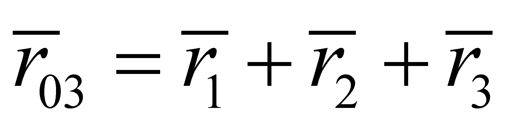
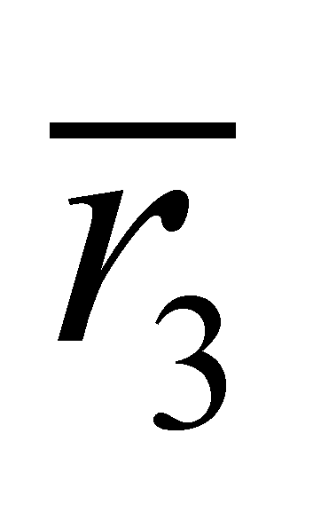
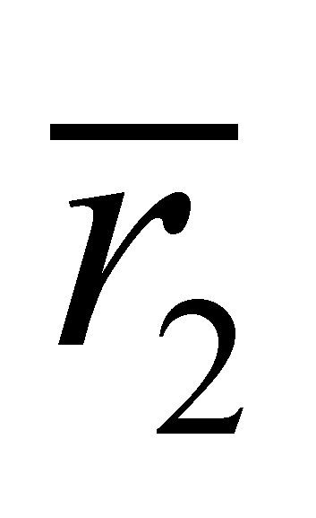

|
|
|
Considering the object O1 from the figure 3.3.1, with an inner reference R1 (assessed against the absolute outer reference R0)13, which has few objects O2 (out of which, only one is represented) in its composition (in its inner structure), which in their turn, contain several objects O3 , so on.
Fig. 3.3.1
If the attribute we are dealing with is the spatial position (but this matter is also valid in case of other attributes), the position of an object O3 against R0 is:
 (3.3.1)
where  is the position vector of the inner reference R3 against R2, is the position vector of the inner reference R2 against R1, etc.
Let us consider that the object O3 is non-decomposable, which means that either it does not have an inner structure any longer, or there are no available information on this kind of structure. Therefore, from analytical point of view, (in sense of its decomposability) this type of object has an unity level. But, the same object may be an element for a synthetic object (in sense of its composability) O2. This synthetic object (composed, generated as a result of a synthesis) shall contain in its inner domain more objects of O3 type whose external attributes are about to be determined against the reference R2. This kind of object (O2) shall have the analytical level equal with two (only a single level may be decomposed). The object O2 can be also a component of another object O1 which shall therefore have the analytical level equal to three, where there is another inner reference R1 which is external to all O2 components.
Definition 3.3.1: The integer number of hierarchical levels in which an object may be decomposed is the analytical level of the structure of that object.
The following remarks may be pointed out based on the aforementioned issues:
The objects are decomposable up to an inner informational limit equal to zero (null information), this limit being settled either by means of a convention (in case of the abstract objects), or by reaching the cognition threshold from a certain moment (for instance, in case of the abiotic material objects, as it was described in chapter 1).
The object’s hierarchical level coincides with the structure level of the reference system associated to these objects, the inner reference systems being abstract substitutes for those objects (the external relations between objects are in fact relations between their reference systems).
The reference which is external to all the objects from a series belonging to the structural levels, with the highest analytical level (that is R0 in this case) is an absolute reference, any other reference from the set being relative (linked through a relation) against this reference. Without the existence of any other reference able to set its value, this reference shall have zero value. The level of the absolute reference (mostly for the models within the real processes) also depends on the level of knowledge existing at a certain moment.
Composition (synthesis) of the objects is made by respecting the object’s existence criteria, both for each component and for the composed object which was generated (criteria P1…P6).
13 A simplified notation was used here, R0…R3 being considered as complete reference systems, but they were not drawn in this figure in order to prevent its complication.
Copyright © 2006-2011 Aurel Rusu. All rights reserved.